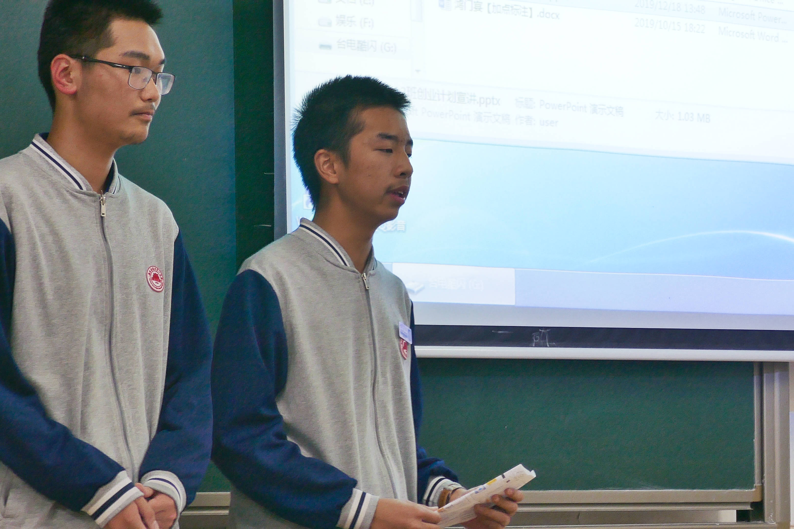

Welcome! My name is S.Y.Xu, a student of Xiamen No.1 Highschool of Fujian （福建省厦门市第一中学）, who also take part in Elite project (英才计划）of Xiamen University.
My research interests lie in Physics Olympiad. I've been learning college-level physics for several years and am looking forward to further achievement in the field of physics.
For more information about me, please go to my blog on www.xsy.science (Available in Simplified Chinese). You can also click the button below to contact me via email.
NOTE: This is a personal webpage and any views or information reflect solely the author and are not the views of the XMU. 中文站点请点击上方博客。